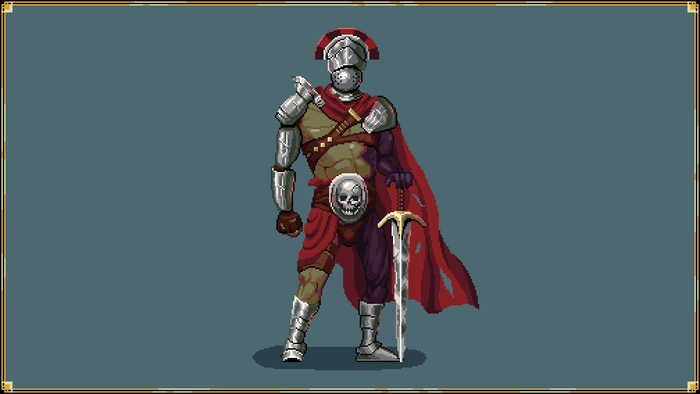
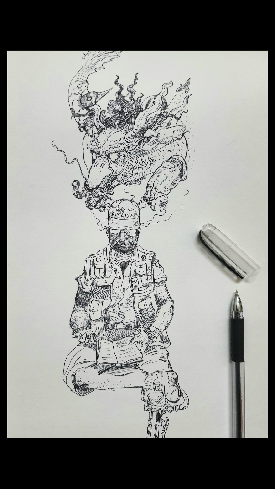
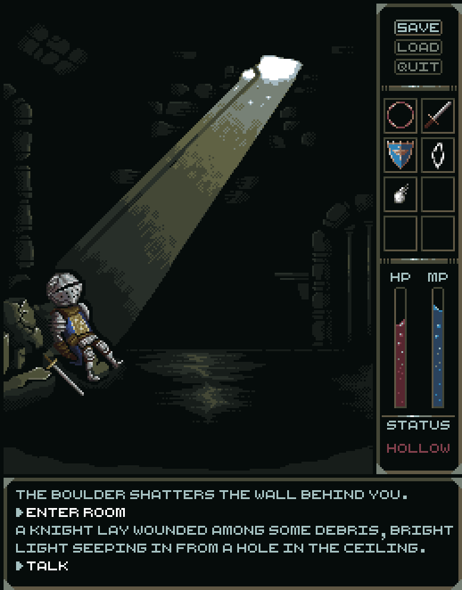
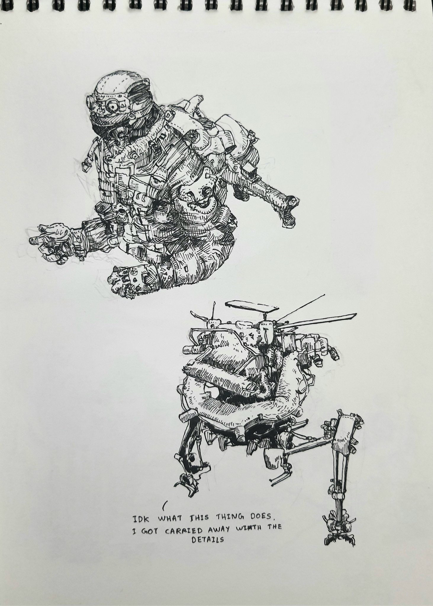
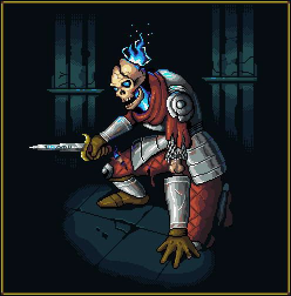
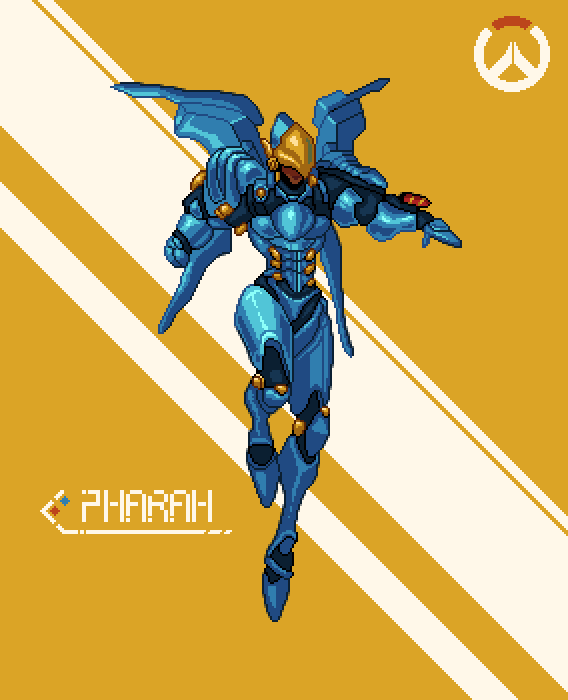

Arborist
CLI tool
A simple command-line tool that generates directory tree visualizations. Point it at a folder and it prints the structure as a tree.
github.com/bash-win/arboristHere's the stuff I've been building, plus some of my sketches and pixel art.
CLI tool
A simple command-line tool that generates directory tree visualizations. Point it at a folder and it prints the structure as a tree.
github.com/bash-win/arboristNeovim plugin
Learn Vim motions through scored mini-games, right inside Neovim. Each lesson drops you into a practice buffer with a goal, like reaching a spot or editing the text into a target shape, and counts your keystrokes against a recommended budget (par). Finish under par for three stars. Lessons are grouped into tracks that build up from hjkl to operator + motion combos.
github.com/bash-win/learn.nvimSimulation · work in progress
A real-time, grid-based ecology simulator that runs entirely in the terminal. This one is an experiment: I built it entirely with AI.
github.com/bash-win/PetriTermInk sketches from my sketchbook and some pixel art.





